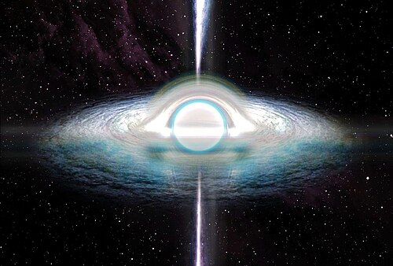
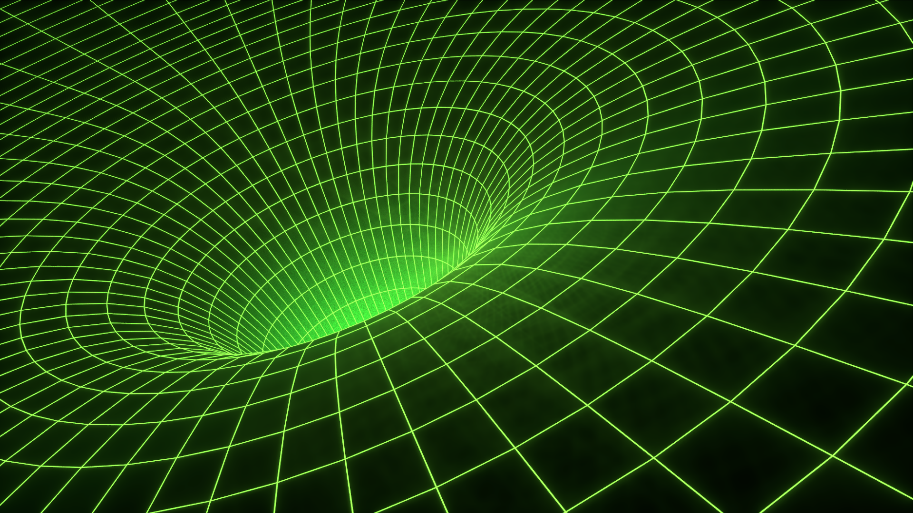

Beyaz Delik, tam zıttı olarak bildiğimiz kara deliğin işlevi olarak da karşıtıdır.
Kara delik maddeleri içine çekerken beyaz delik maddeleri dışarı fırlatır.
Kara delik her şeyi yutarken beyaz delik hiçbir şeyi kabul etmez.
Matematiksel modellerde beyaz delikler, "zamanı geriye doğru oynatılan bir kara delik" simetrisine sahiptir.
Tek yönlüdür ve giriş imkansızdır, yalnızca çıkış vardır.
Çünkü beyaz delik ziyaretçi kabul etmez.
Beyaz delik tamamen bir matematiksel varsayımdır,
gözlemsel bir kanıt bulunmamaktadır. Tamamen teoriktir.
Matematiksel olarak kara deliğin zıt ucu gibi görünse de fiziksel olarak
nasıl varlar, nasıl oluştular ve nasıl varlığını devam ettirecekler bilinmemektedir.

Görsel: Wikimedia Commons
Bu delikler, uzaydaki bambaşka noktaları birbirlerine bağlayan birer tüneldir.
Solucan deliklerinin bir arka bir de ön kapısı var diyebiliriz.
Genelde "kestirme yol" olarak tanımlanır. Kara delikler çıkmaz bir sokakken
solucan delikleri seni kısa yoldan uzayın en ücra noktalarına götürebilir.
Solucan delikleri Genel Görelilik matematiğine bakılırsa varlıkları mümkündür
ama yine de var olduklarına dair bir kanıt yoktur.
Var olsalardı görünüşü bakımından çevrelerinde dönen maddeler yüzünden bir kasırgaya benzetilebilirdi.
Mevcut teoriye göre ışık hızından hızlı olması imkansızdır ve solucan deliği hızı arttırmaz
sadece birbirinden uzak iki noktanın arasındaki mesafeyi azaltan, yaklaştıran bir uzay kestirme yoludur.
Böyle denilince akılda zaman yolculuğu canlanıyor fakat solucan deliği zamanda geri gitmeyi sağlamaz sadece mesafeyi kısaltır.
Genel Görelilik teorisinde bu konuya dair bazi açıklar vardır ama insan gücü bunu test etmeye yeterli degildir.
Genel Görelilik teoremine göre matematiksel olarak bir solucan deliğinden geçmeye çalıştığınız vakit,
kendi kütleniz tünelin kütleçekim dengesini bozar ve tünel siz içindeyken anında çökerek sizi ezer.
Bunun önüne geçebilmek için tunal duvarlarını açık tutmak gerekir.
Bunu sağlamak, anti-kütleçekimi uygulayan, negatif enerjiye sahip "Egzotik Madde"
adında teorik bir yakıta ihtiyaç vardır. Negatif enerji, kütleçekiminin tam tersi bir etki yaratarak
tünel duvarlarını dışarıya doğru iter (anti-kütleçekimi).
Madde tünelden geçerken, bu negatif enerji tünelin çökmesini engeller.
Ne yazik ki evrende bunu yakıtı bulabileceğimiz bir yer henüz bilmiyoruz ve bu yakıtı üretebilecek teknolojiye henüz sahip değiliz.

Görsel: Wikimedia Commons